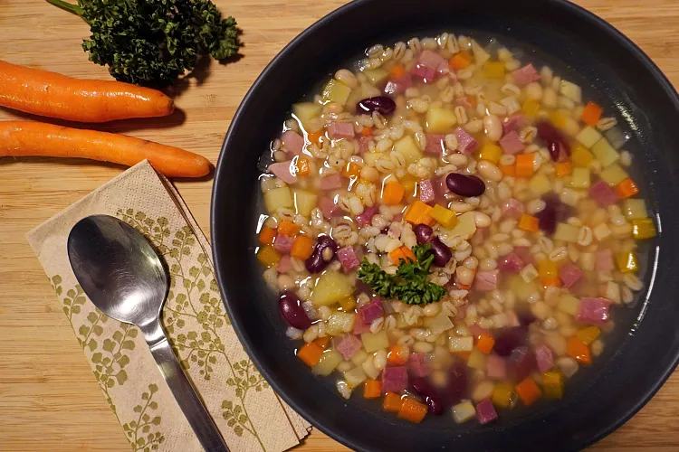
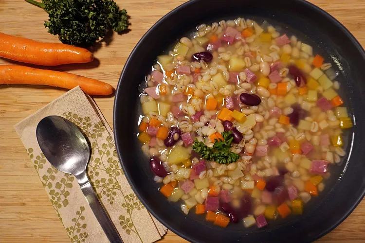
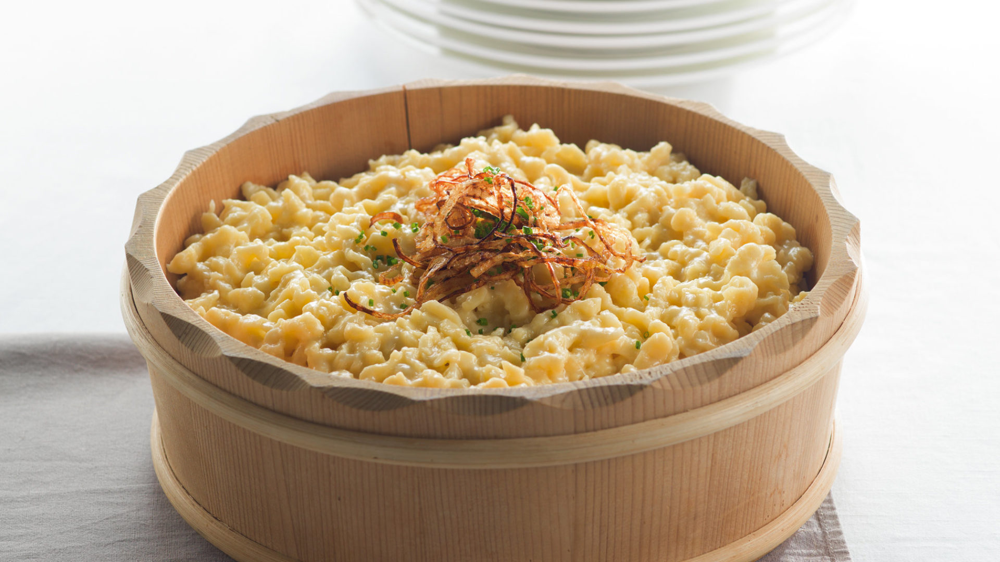
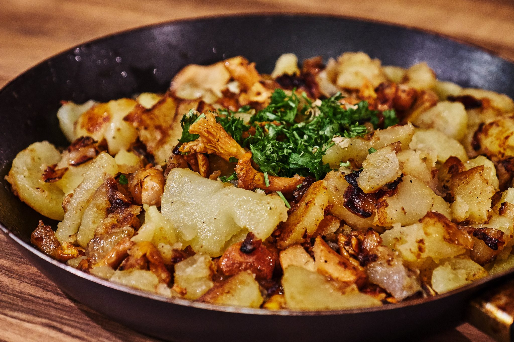
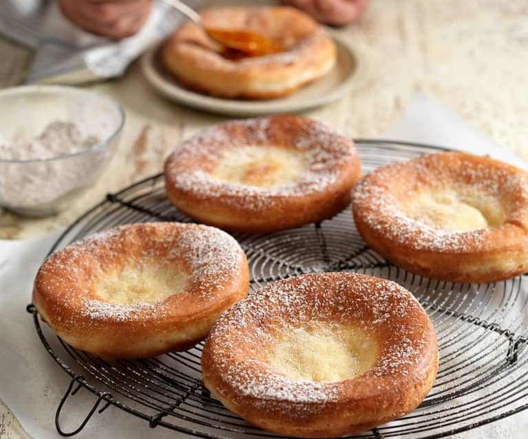
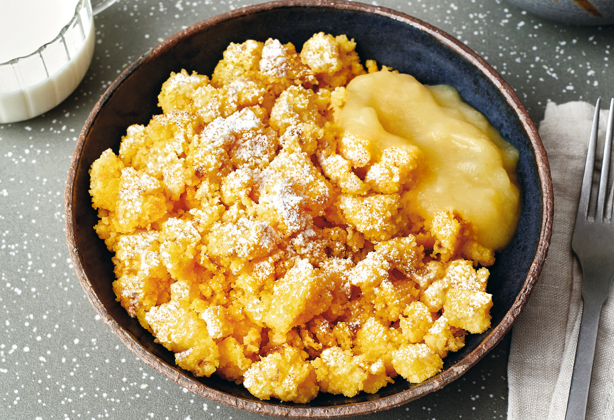
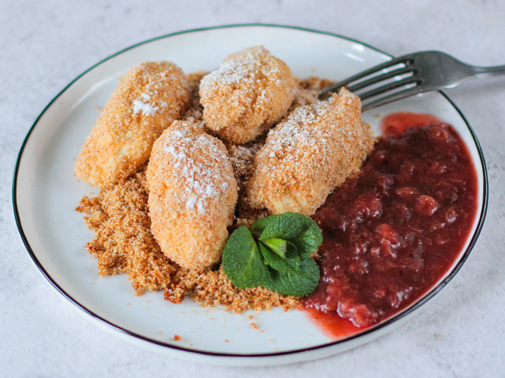
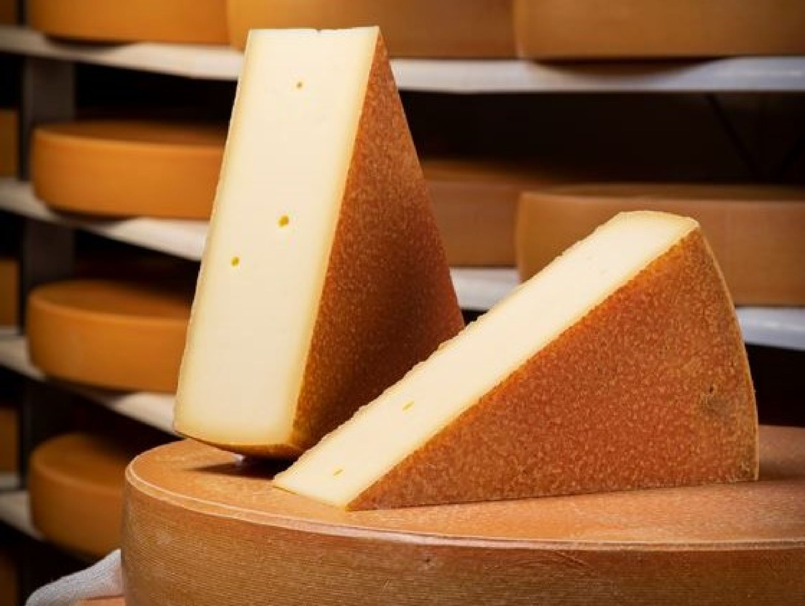
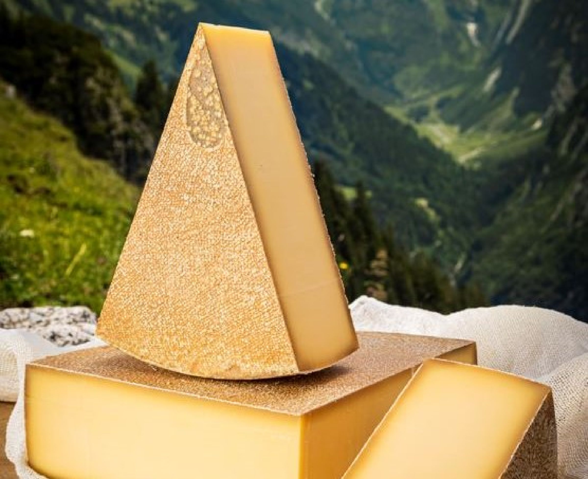

Vorspeisen
Gerstensuppe
Herzhafte Suppe, perfekt für die kühleren Monate.
Zwiebelsuppe
Zwiebelsuppe besteht, die aus karamellisierten Zwiebeln und Rinderbrühe, oft mit geröstetem Brot und geschmolzenem Käse darüber serviert.

Herzhafte Suppe, perfekt für die kühleren Monate.
Zwiebelsuppe besteht, die aus karamellisierten Zwiebeln und Rinderbrühe, oft mit geröstetem Brot und geschmolzenem Käse darüber serviert.
Teigklößchen mit geschmolzenem Käse und Röstzwiebeln man kann dies auch mit als Käsespätzle bezeichnen.
Eierschwammerl-Gröstl ist ein herzhaftes Gericht aus gebratenen Schwammerl, Kartoffeln und Zwiebeln, oft mit Petersilie und einem Spiegelei serviert.
Frittierte Teigkugeln, oft mit Puderzucker bestreut.
Mais- und Weizengrießgericht, serviert mit Apfelmus.
Kleine Quarkbällchen, oft mit Früchten oder Vanillesauce serviert.
Würziger Käse aus den Bergen Vorarlbergs.
Milder Käse aus der Region.
